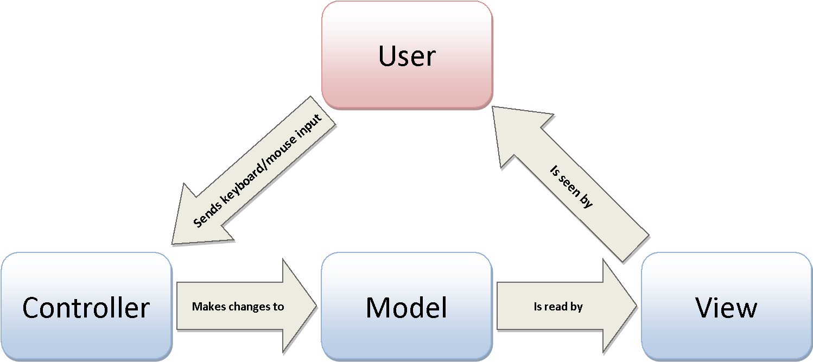
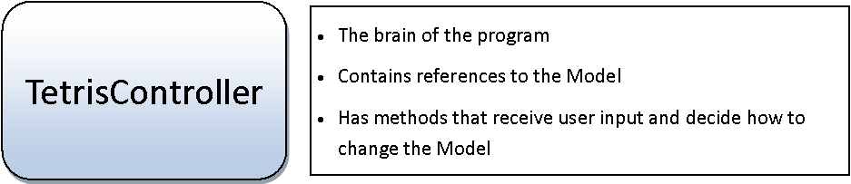

One of the biggest challenges that occurs when creating large object oriented applications is determining how it all comes together. One common way of dividing up the information is to break it up into three parts: The Model, The View, and The Controller.
The Model is in charge of all the core data that represents the program that we're dealing with. So far this is what we’ve been working on. We’ve created Location and TetrisGrid classes to represent the current state of the game. Notice that so far we have not done anything that deals with how the game should look (except for having a Color objects, which is only a model of a real Color).
The View is in charge of the visible portion of the game. The View reads the Model and determines what the user actually sees.
The Controller is in charge of determining when and how the Model should change. The Controller is the portion of the project that the user interacts with. The Controller is the brain of the operation. It listens to all key presses, timer ticks, and mouse events and determines how the Model should change (which should in turn be reflected in the View).
In short: Controller Obtains the input, the Model stores the data, and the View displays the data.

In order to make sure that we’re using the MVC model, we are going to create objects that each represent one of the important parts of the project. Read through the responsibilities of each of the objects below.

So far we've been working on several classes that belong to the Model. First we're going to finish up some of the Model's structure, and then we can start working on the look and the control.
So far, we've been working on the Model portion. The TetrisGrid is a huge part of the Model, which needed the Color and Location class to function, but the grid is not the only piece of information that a Tetris model would need in order to represent itself. It would also need to know about the four Blocks that make up the Tetris Piece.
The Tetris Piece is a class that will have a few complicated methods. We will definitely be returning to it later, but for now simply create an empty class named TetrisPiece and compile it.
We have already been working on the Model portion of Tetris, so we're just going to add a class named TetrisModel which will contain references to all of the important data for the game. Any object that wants to access the information about the game will call the model's getPiece or getGrid method, and then other methods from there.
For now, the instance fields that the TetrisModel should have is a TetrisGrid and a TetrisPiece. Even though TetrisPiece is incomplete, we can still establish it's existence in the Model.
The Constructor should construct a new TetrisGrid with 20 rows and 10 columns into the instance field.
Add a getGrid method that will return the TetrisGrid instance field. This means that any object that has a reference to the TetrisModel can access the grid using getGrid().
Similarly, add a getPiece method to return the TetrisPiece.
That's about it. The model is more that just the one class. The TetrisModel class is simply the place that other bits of the program will go through to access the other objects.